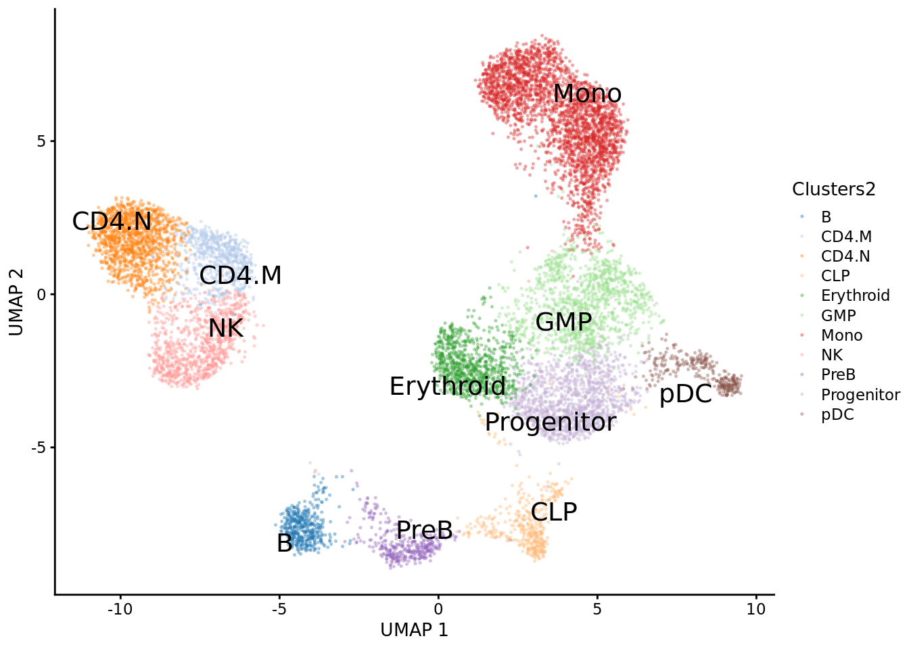

Chapter 3 Hematopoeisis tutorial - MAE
In this vignette, we used a dataset from the ArchR tutorial. Prior to using epiregulon, this dataset has been fully preprocessed in ArchR, and converted to a MultiAssayExperiment using epireglon::archr2MAE. The MAE object was uploaded to scMultiome for full reproducibility. In this dataset, scRNAseq and scATACseq were unpaired and integrated by the ArchR::addGeneIntegrationMatrix function.
3.1 Installation
Epiregulon is currently available on R/dev
library(epiregulon)## Warning: replacing previous import 'GenomicRanges::union' by 'igraph::union'
## when loading 'epiregulon'#devtools::load_all("/gstore/project/lineage/xiaosai/epiregulon")If you would like to install from gitlab,
devtools::install_github(repo='xiaosaiyao/epiregulon')
library(epiregulon)3.2 Data preparation
Download the example dataset from scMultiome package
mae <- scMultiome::hematopoiesis()## see ?scMultiome and browseVignettes('scMultiome') for documentation## loading from cache# Load peak matrix
PeakMatrix <- mae[["PeakMatrix"]]
# Load expression matrix
GeneExpressionMatrix <- mae[["GeneIntegrationMatrix"]]
# Add gene symbols to rownames
rownames(GeneExpressionMatrix) <- rowData(GeneExpressionMatrix)$name
# Transfer dimensionality reduction matrix to GeneExpression
reducedDim(GeneExpressionMatrix, "IterativeLSI") <-
reducedDim(mae[['TileMatrix500']], "IterativeLSI")
reducedDim(GeneExpressionMatrix, "UMAP") <-
reducedDim(mae[['TileMatrix500']], "UMAP")Visualize the data
scater::plotReducedDim(GeneExpressionMatrix,
dimred = "UMAP",
text_by = "Clusters2",
colour_by = "Clusters2",
point_size = 0.3,
point_alpha = 0.3)
3.3 Quick start
3.3.1 Retrieve bulk TF ChIP-seq binding sites
First, we retrieve the information of TF binding sites collected from Cistrome and ENCODE ChIP-seq. Currently, human genomes hg19 and hg38 and mouse genome mm10 are available
grl <- getTFMotifInfo(genome = "hg19")## see ?scMultiome and browseVignettes('scMultiome') for documentation## loading from cachehead(grl)## GRangesList object of length 6:
## $`5-hmC`
## GRanges object with 22860 ranges and 0 metadata columns:
## seqnames ranges strand
## <Rle> <IRanges> <Rle>
## [1] chr1 10001-10685 *
## [2] chr1 13362-13694 *
## [3] chr1 29631-29989 *
## [4] chr1 40454-40754 *
## [5] chr1 135395-135871 *
## ... ... ... ...
## [22856] chrM 15303-15326 *
## [22857] chrM 15328-16172 *
## [22858] chrM 16174-16183 *
## [22859] chrM 16186-16224 *
## [22860] chrM 16226-16492 *
## -------
## seqinfo: 25 sequences from an unspecified genome; no seqlengths
##
## ...
## <5 more elements>3.3.2 Link ATACseq peaks to target genes
Next, we compute peak to gene correlations using a custom algorithm that has similar performance to ArchR’s P2G function. Wherever possible, use a multidimensional dimensionality reduction matrix such as LSI or PCA instead of UMAP or TSNE since the former provides a more accurate estimate of cell similarity.
print(epiregulon:::rowSums)## new("standardGeneric", .Data = function (x, ...)
## standardGeneric("rowSums"), generic = "rowSums", package = "epiregulon",
## group = list(), valueClass = character(0), signature = "x",
## default = new("derivedDefaultMethod", .Data = function (x,
## ...)
## Matrix::rowSums(x), target = new("signature", .Data = "ANY",
## names = "x", package = "methods"), defined = new("signature",
## .Data = "ANY", names = "x", package = "methods"), generic = "rowSums"),
## skeleton = (new("derivedDefaultMethod", .Data = function (x,
## ...)
## Matrix::rowSums(x), target = new("signature", .Data = "ANY",
## names = "x", package = "methods"), defined = new("signature",
## .Data = "ANY", names = "x", package = "methods"), generic = "rowSums"))(x,
## ...))
## <bytecode: 0x55558667a238>
## <environment: 0x55558666c440>
## attr(,"generic")
## [1] "rowSums"
## attr(,"generic")attr(,"package")
## [1] "epiregulon"
## attr(,"package")
## [1] "epiregulon"
## attr(,"group")
## list()
## attr(,"valueClass")
## character(0)
## attr(,"signature")
## [1] "x"
## attr(,"default")
## Method Definition (Class "derivedDefaultMethod"):
##
## function (x, ...)
## Matrix::rowSums(x)
## <environment: namespace:epiregulon>
##
## Signatures:
## x
## target "ANY"
## defined "ANY"
## attr(,"skeleton")
## (new("derivedDefaultMethod", .Data = function (x, ...)
## Matrix::rowSums(x), target = new("signature", .Data = "ANY",
## names = "x", package = "methods"), defined = new("signature",
## .Data = "ANY", names = "x", package = "methods"), generic = "rowSums"))(x,
## ...)
## attr(,"class")
## [1] "standardGeneric"
## attr(,"class")attr(,"package")
## [1] "methods"set.seed(1010)
p2g <- calculateP2G(peakMatrix = PeakMatrix,
expMatrix = GeneExpressionMatrix,
exp_assay = "normalizedCounts",
reducedDim = reducedDim(GeneExpressionMatrix, "IterativeLSI"))## Using epiregulon to compute peak to gene links...## performing k means clustering to form metacells## Computing correlationp2g## DataFrame with 23711 rows and 8 columns
## idxATAC chr start end idxRNA target Correlation
## <integer> <character> <integer> <integer> <integer> <array> <matrix>
## 1 7 chr1 801002 801502 2 LINC00115 0.864244
## 2 8 chr1 805039 805539 6 KLHL17 0.625471
## 3 9 chr1 845326 845826 10 AGRN 0.545993
## 4 10 chr1 846428 846928 10 AGRN 0.646209
## 5 13 chr1 856263 856763 10 AGRN 0.549411
## ... ... ... ... ... ... ... ...
## 23707 146403 chr22 51021154 51021654 12089 ARSA 0.655996
## 23708 146412 chr22 51110826 51111326 12090 SHANK3 0.560404
## 23709 146417 chr22 51143606 51144106 12090 SHANK3 0.500026
## 23710 146421 chr22 51213512 51214012 12090 SHANK3 0.504567
## 23711 146421 chr22 51213512 51214012 12091 ACR 0.557113
## distance
## <integer>
## 1 36099
## 2 88427
## 3 107676
## 4 106574
## 5 96739
## ... ...
## 23707 44747
## 23708 0
## 23709 30336
## 23710 100242
## 23711 36660